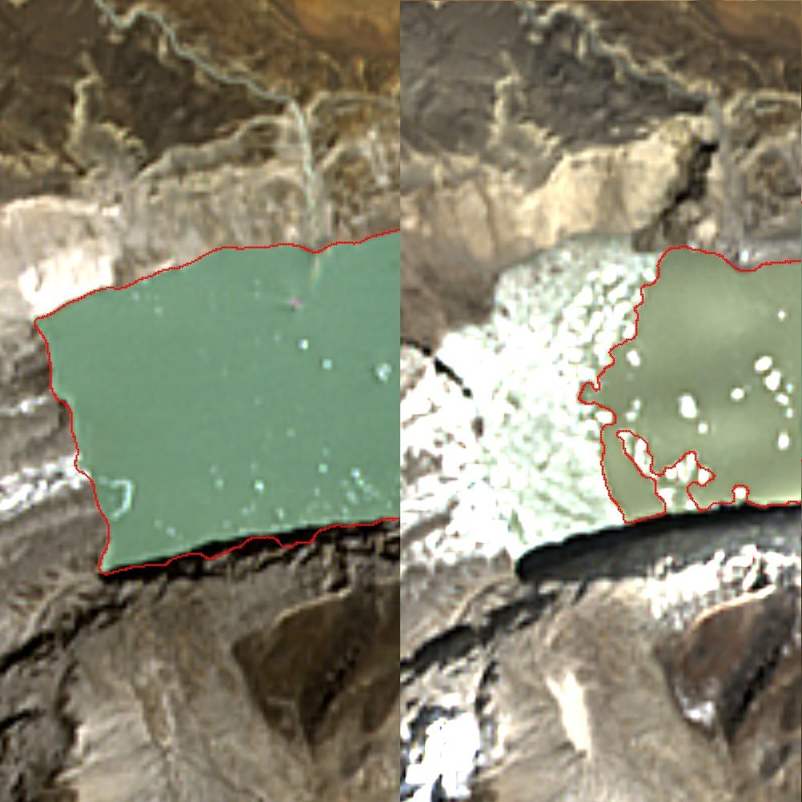

Mountain disaster agencies need warning of glacial-lake outbursts — but total lake volume, what most assessments report, isn't what determines downstream impact. SkySpera measures the *releasable discharge volume* from 1 m visual and 2–4 m multispectral over a 1 m BaseDEM, models the downstream path across settlements, and raises growth-rate anomaly alerts, for any glacial lake on Earth, from a full historical baseline. Patent-pending.
Tell us the ground you need to watch — we'll show you what SkySpera can do with it.
Talk to us